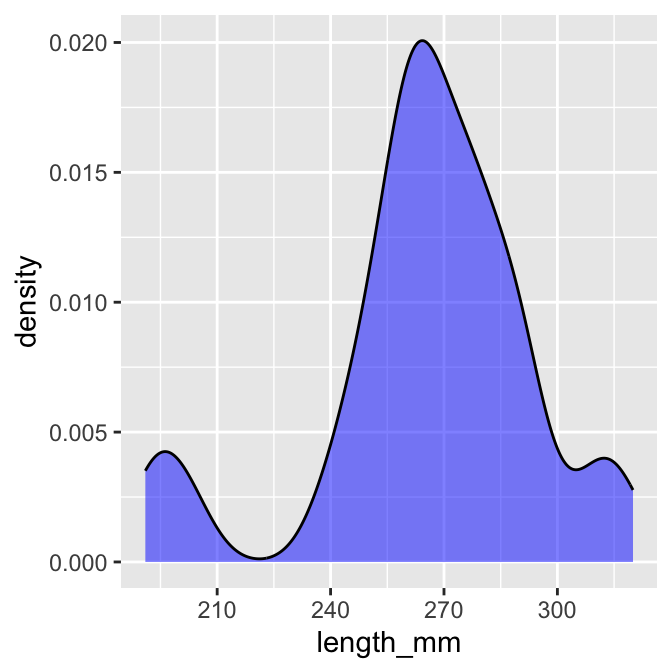

# A tibble: 6 × 5
site lake species length_mm mass_g
<dbl> <chr> <chr> <dbl> <dbl>
1 113 I3 arctic grayling 266 135
2 113 I3 arctic grayling 290 185
3 113 I3 arctic grayling 262 145
4 113 I3 arctic grayling 275 160
5 113 I3 arctic grayling 240 105
6 113 I3 arctic grayling 265 145Probability & Inference
Probability and inference
Comparing Lakes
Now let’s compare two lakes

Now let’s compare two lakes side by side:
Part 2: From Histograms to Density Plots
Density plots give us a smoothed version of the histogram It has the proportion of the data under each part of the curve This sums to 1

We can overlay the density plot on the histogram :

Part 3 - area under the density curve
We could show this if we really wanted…
# Function to calculate area under density curve
calculate_density_area <- function(data_vector) {
# Remove NA values
data_vector <- data_vector[!is.na(data_vector)]
# Calculate density
dens <- density(data_vector)
# Calculate area using numeric integration (trapezoidal rule)
# Area should be approximately 1
dx <- diff(dens$x)
y_avg <- (dens$y[-1] + dens$y[-length(dens$y)]) / 2
area <- sum(dx * y_avg)
return(area)
}
# Apply to i3 lake data
i3_data <- i3_df %>%
pull(length_mm)
area_value <- calculate_density_area(i3_data)
# Create plot with calculated area
i3_df %>%
ggplot(aes(x = length_mm)) +
geom_density(fill = "blue", alpha = 0.4) +
geom_area(stat = "density", fill = "red", alpha = 0.3) +
labs(title = "Area Under Probability Density Function = 1",
subtitle = paste("Calculated area =", round(area_value, 4)),
x = "Length (mm)",
y = "Density")
looking at particular areas…
This can be adapted to calculate the area of a subset of the plot
I don’t expect you to know or be able to do all of this but is here to play with the code
# ------- PART 3: SET INPUT VALUES -------
# change these values to calculate different probabilities
# For this example, let's calculate the probability of fish between 40mm and 60mm
lower_bound <- 320 # change this value
upper_bound <- 350 # change this value
# ------- PART 1: PREPARE THE DATA -------
# Filter data for just one lake to keep it simple for students
i3_fish <- i3_df %>%
filter(!is.na(length_mm)) # Remove any missing values
# ------- PART 2: CREATE A FUNCTION TO CALCULATE PROBABILITY -------
# This function calculates the probability of finding a fish with length between
# lower_bound and upper_bound using the empirical distribution of our data
calculate_probability <- function(data_vector, lower_bound, upper_bound) {
# First, we create a density object from our data
dens <- density(data_vector)
# Find indices of x-values that fall within our bounds
indices <- which(dens$x >= lower_bound & dens$x <= upper_bound)
# If we have no points in the range, return 0
if(length(indices) <= 1) {
return(0)
}
# Get x and y values within our bounds
x_values <- dens$x[indices]
y_values <- dens$y[indices]
# Calculate the area using the trapezoidal rule
# (average height × width) for each segment, then sum all segments
widths <- diff(x_values)
avg_heights <- (y_values[-1] + y_values[-length(y_values)]) / 2
area_in_range <- sum(widths * avg_heights)
# Return the calculated probability
return(area_in_range)
}
# ------- PART 4: CALCULATE THE PROBABILITY -------
# Calculate the probability for the specified range
probability <- calculate_probability(i3_fish$length_mm, lower_bound, upper_bound)
# Calculate the total area to show that the complete distribution sums to approximately 1
total_area <- calculate_probability(i3_fish$length_mm,
min(i3_fish$length_mm),
max(i3_fish$length_mm))
# ------- PART 5: CREATE THE VISUALIZATION -------
# Create density data for the highlighting
density_data <- density(i3_fish$length_mm)
density_df <- data.frame(x = density_data$x, y = density_data$y)
# Create a subset for the area of interest
highlight_df <- density_df %>%
filter(x >= lower_bound & x <= upper_bound)
# Create the plot
ggplot(i3_fish, aes(x = length_mm)) +
# First, plot the overall density curve in light blue
geom_density(fill = "lightblue", alpha = 0.5) +
# Then highlight our region of interest in dark red
geom_area(data = highlight_df, aes(x = x, y = y),
fill = "darkred", alpha = 0.7) +
# Add vertical lines to clearly mark the boundaries
geom_vline(xintercept = lower_bound, linetype = "dashed", color = "red") +
geom_vline(xintercept = upper_bound, linetype = "dashed", color = "red") +
# Add informative labels
labs(
title = "Probability Distribution of Fish Lengths",
subtitle = paste0("Probability of fish between ", lower_bound,
" and ", upper_bound, " mm = ",
round(probability * 100, 1), "%"),
caption = paste("Total area under the curve =", round(total_area, 3)),
x = "Fish Length (mm)",
y = "Density"
) +
# Add text annotations to explain the areas
annotate("text", x = (lower_bound + upper_bound)/2,
y = max(density(i3_fish$length_mm)$y) * 0.7,
label = paste0("Area = ", round(probability, 3)),
color = "white", size = 4) +
# Make the plot look nicer
theme_minimal() +
theme(
plot.title = element_text(face = "bold"),
plot.subtitle = element_text(color = "darkred")
)
Now plot the Z Scores as a histogram
`stat_bin()` using `bins = 30`. Pick better value `binwidth`.